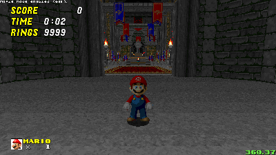

The Worst Mario - Sonic Robo Blast 2: Character Mod
Don't die
[Download V1]
The Worst Mario is another Mario character for SRB2, but with a twist.
It is based off of the Sonic Romhack: The worst Sonic the Hedgehog romhack (featuring mario)
by Sonic the dutch hedgehog
Abilities
Able to double jump, WOO (custom 1), and cheer! (custom 2)


And if you're willing to get all of the chaos emeralds... again...

Super Abilities
Chargable Double Jump
Holding jump in the air will charge up your double jump! Releasing jump will make you boost upwards!

Spike Bust
Touching spikes while super will instantly break them!
And SHOCKWAVE WOO!
Pressing what was once a taunt button, now kills enemies around you!

Credits
ChrisFurry - Lua scriping
superandrews - Super WOO sound edit, some of the ideas in the mod
supersonicnk - Some of the ideas in the mod
uJidow - Mario middle finger render
New e seus neguinhos - WOO sound
Testers
superandrews
supersonicnk
Sharb
OrangeRob
TheGamedawg
CosmicEternity/LittlePlanetCD
MarkTheMaster91
Extra Screenshots/Gifs